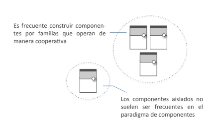

Principios en Diseño de Components

|
Josué Arambide- Desarrollador frontend en TCS - Consultor de Tecnologia en Teczelt brazil |
Social- github.com/josueaqp92/ - josue@josuearambide.com |
|
¿Por qué web components?
- Encapsulación de la lógica
- Comportamiento adaptativo
- Gestión de la Evolución Centralizada
- Se adapta evolutivamente bajo demanda
- Orientada a la vista
- Construcción compositiva
Principios de Diseño
- Dominio
- Abstracción
- Acoplamiento débil
- Reutilización
- Composición
- Adaptación
- Encapsulación
- Evolución
- Estandarización
- Contextualización
Principio de Diseño Centrado en el Dominio
Comienza siempre realizando una adecuada división de responsabilidades en el ámbito de tu dominio y garantizando la ausencia de huecos y solapamientos entre componentes.-
No debemos tener componentes aislados ya que estos deben pertenecer a una familia

-
Lo prioritario es tener claro qué capacidades quieres cubrir con tus componentes y qué
otras dejarás conscientemente fuera.
- Antes de empezar la construcción de tus componentes determina el ámbito preciso de responsabilidades que quieres cubrir con ella.
- Asegúrate de que la construcción de tus componentes sólo aborden competencias propias del dominio al que pertenece.

- Fomentar cohesión entre el dominio (altamente relacionados)

Complamiento Débil
Cuando construyas un componente asegúrate de minimizar el número de dependencias existentes y de mantener un diseño agnós2co de las caracterís2cas de las mismas.-
Demos minimizar al máximo el número de dependencias o tener dependencias opcionales
- Cada dependencia significa un riesgo de propagación de errores
-
Las dependencias obligatorias deben ser explícitas
- Hacer implicitas las dependencias opcionales
- La propagación de eventos
- La propagación de eventos
- Buscar comunicación indirecta (Los esquema de indirección siempre
fomentan el desacoplamiento ya que
permiten segmentar la comunicación.)
- La comunicación no debe estar ligada estrictamente (bus)
Principio de Abstracción
Asegúrate siempre de que tus componentes operan al nivel más elevado de abstracción posible dentro de los contextos de colaboración en que participen.- Debe haber un nivel de abstracción centrado al contexto en el que se trabaja
- Opera Al Mayor Nivel De Abstracción Posible
- Al definir un componente en un nivel de abstracción dado se condiciona su número de potenciales colaboradores.
- Construir abstracción de datos
- Seguir el polimorfismo POO
- Abstrae Para Componer: Diseñar al nivel adecuado de abstracción permite hacer una división de responsabilidades sobre el dominio que fomenta las oportunidades de composición.
- Abstrae Para Extender: La definición de abstracciones permite articular puntos de extensión variante donde nuevos componentes puedan incluirse como sustitutos.
Principio de Reutilización
Asegúrate de maximizar siempre las posibilidades de reutilización de tus componentes dentro del dominio al que pertenecen.- Se debe estudiar los requisitos de los demás componentes
- Se debe respetar el dominio y no afectarlo
- Debe evitar el acoplamiento fuerte
- Verificar el nivel de granularidad, ya que se pone en riesgo la reutilización
-> alto nivel de reuso, sin contexto -> alto nivel de reuso, tiene contexto -> poco reuso, alto contexto - Perseguir la declaratividad
- Evitar convenciones propias
- Usar estándares en el grupo
Principio de Compositividad
Diseña tus componentes de manera que se maximicen las oportunidades de composición con otros componentes presentes en el contexto de uso.- Diseñar para Componer: A diferencia de lo que ocurre con las etiquetas estándar que funcionan con alta autonomía, los componentes Web se centran en capturar esquemas de composición.
- Asegura La Escalabilidad: Los componentes deben ofrecer una experiencia funcional de usuario cerrada
pero a la vez mantener la recep2vidad a nuevas composiciones.
// no event.stopPropagation(); // si event.stopPropagation(); this.$event('click', e);
- Busca La Continuidad: Una composición correcta es aquella en la que no es posible discernir las partes implicadas ya que no presenta fisuras de continuidad visuales o interactivas.

- Abstrae La Composición: Se deben imponer las menores restricciones sobre los elementos de una composición para aumentar el número de posibles candidatos a par2cipantes.
Drawer panel...
Main panel...
- Encapsula La Composición: Cuando encapsulamos pretendemos capturar interacciones soportadas en base a las composiciones que conectan los componentes.